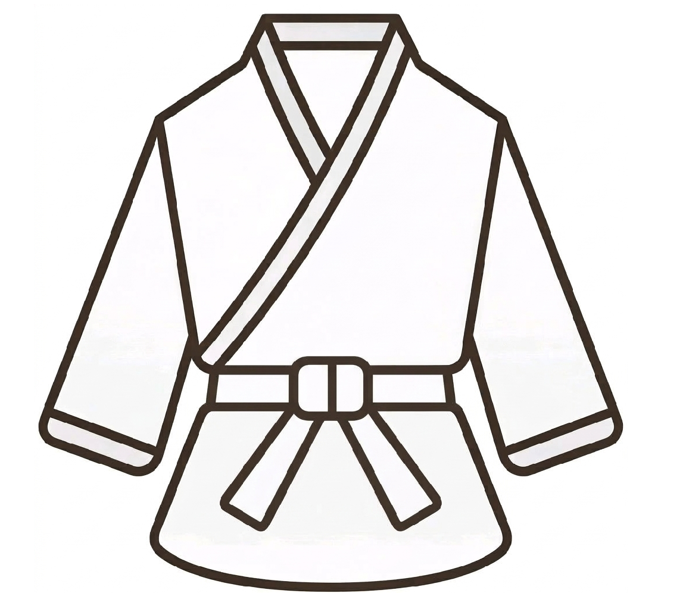
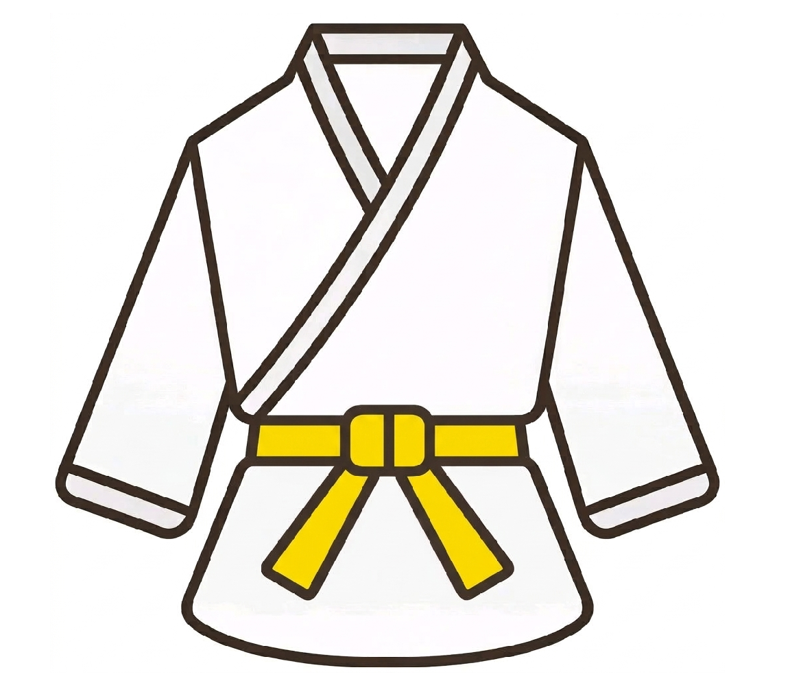
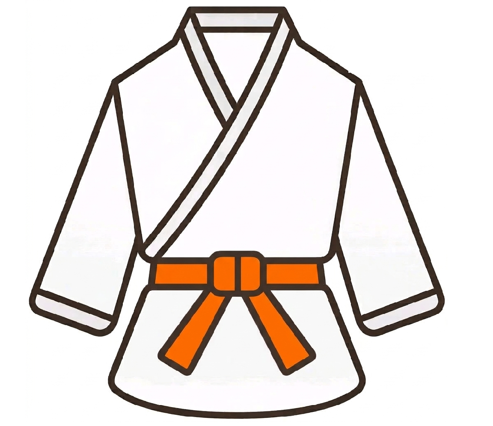
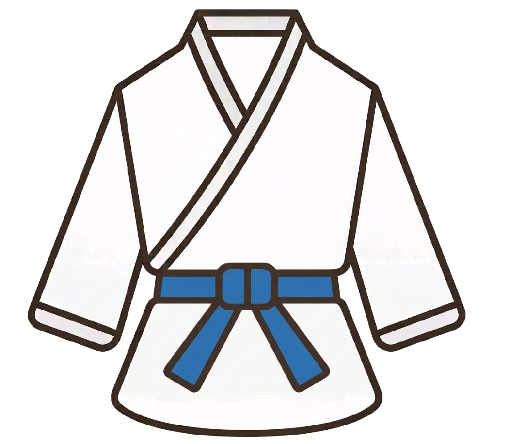
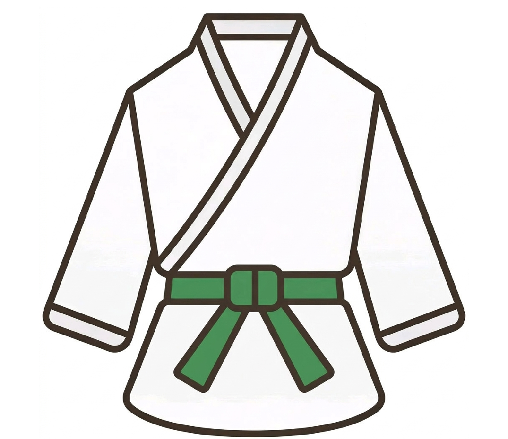
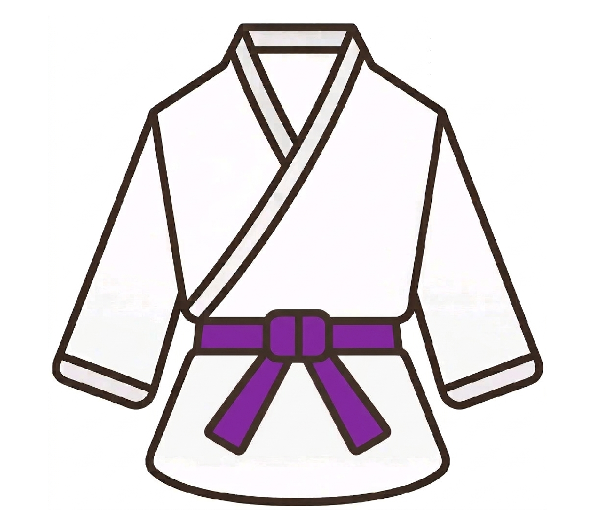
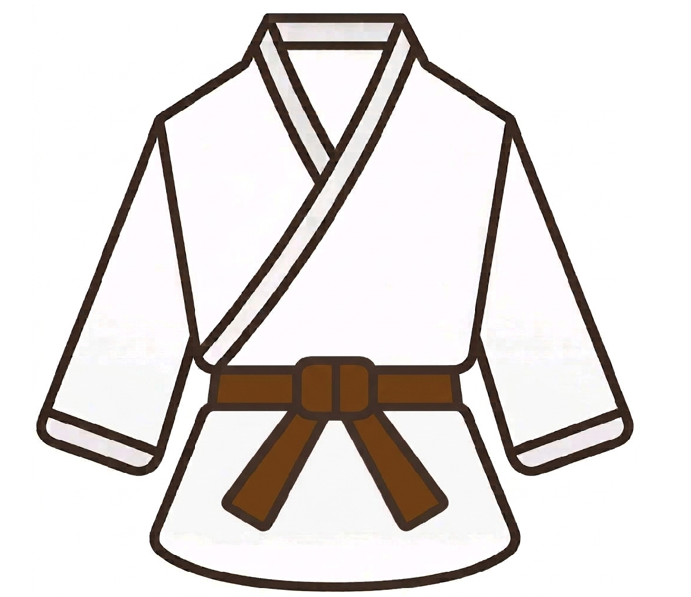
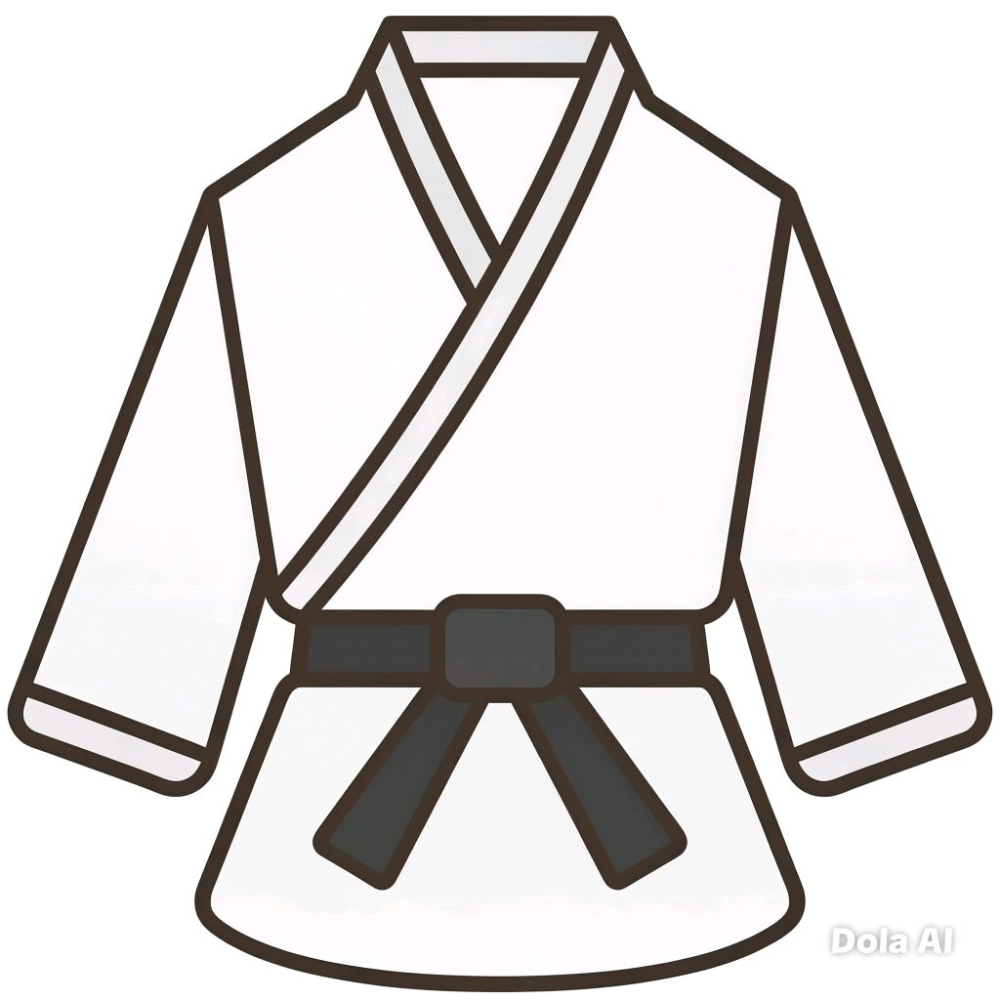

Clique em qualquer faixa abaixo para ver os objetivos de treino, fotos e vídeos específicos de cada graduação:
A cor branca representa a pureza, a mente aberta e o potencial do iniciante. É a folha em branco onde os primeiros conhecimentos serão escritos.
Foco do Treino: Aprender a etiqueta do dojo, as bases iniciais (Zenkutsu-dachi) e os primeiros socos e defesas do Kihon. É a fase de se adaptar ao ritmo dos treinos.

Simboliza o sol nascente e a terra que começa a receber os primeiros raios de luz do conhecimento marcial.
Foco do Treino: Começa-se a exigir mais estabilidade nas bases, velocidade nos golpes e a introdução dos primeiros Katas oficiais (como o Heian Shodan).

Representa o amadurecimento, o vigor e o crescimento da energia solar do karateca dentro do dojo.
Foco do Treino: Transições rápidas entre as bases, chutes mais técnicos e foco no ganho de força explosiva no Kihon básico.

O azul simboliza a cor do oceano e do céu. Representa um karateca que já superou as fases iniciais e começa a encontrar serenidade, fluidez e maior controle sobre suas técnicas.
Foco do Treino: Desenvolvimento da coordenação fina, agilidade nas esquivas e contra-ataques. Os treinos de Kumite começam a exigir inteligência tática, e novos Katas intermediários são ensinados.

Representa a planta que cresce para cima e cria raízes profundas na terra. O praticante começa a fixar sua própria identidade técnica.
Foco do Treino: Ritmo, fluidez nos movimentos e aplicação pesada do Bunkai (a aplicação em combate real de cada golpe dos Katas).

Uma cor mística que indica que o aluno cruzou a linha do nível básico/intermediário e entra no limiar dos treinos avançados. Exige maior introspecção e foco mental.
Foco do Treino: Potência máxima, combinações complexas de ataques contínuos e controle total do espírito no Kumite livre.

A cor da terra firme e do tronco forte. Significa que a técnica do karateca está sólida, mas precisa ser polida exaustivamente para alcançar o nível de mestre.
Foco do Treino: Lapidação técnica extrema, preparação física para o exame de faixa preta e desenvolvimento do papel de liderança auxiliando os menos graduados.

O acúmulo de todo o conhecimento. Ao contrário do senso comum, a faixa preta não representa o fim dos estudos, mas o renascimento do praticante como um verdadeiro estudante da arte (1º Dan).
Foco do Treino: Domínio técnico pleno, inteligência emocional superior e autoconhecimento. O objetivo é a perfeição do caráter e espalhar os valores do Karatê-Do.
